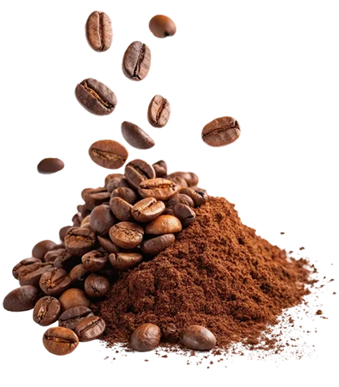

Fruity & bright
Lively acidity that tastes like fruit rather than sourness, from citrus to berries.
Brewing your experience
SPECIALTY COFFEE - ORIGINS
Before it is a flat white, it is a cherry on a branch, a season of weather and a pair of hands. Follow one cup back to where it began.
FLAVOUR PROFILES
A coffee’s character is set by its variety, its altitude, its soil and the way it is handled after picking. Here is how we think about choosing a bean.

Lively acidity that tastes like fruit rather than sourness, from citrus to berries.
Delicate and aromatic, closer to jasmine or black tea than to a typical cup of coffee.
Comforting, low in acidity and full-bodied. The classic base for espresso and milk drinks.
Rounded sweetness reminiscent of toffee, brown sugar and baked fruit.
THE BEAN BELT
Coffee grows in a narrow band around the equator, in high, cool, well-watered places. Six regions that show how different that can taste.

MEET THE GROWERS
Great coffee is grown, not manufactured. We partner with small farms who shade-grow their trees, pick by hand at peak ripeness and sort the cherries the same day. Every cup begins with their patience.

 01 Harvest
01 Harvest
 02 Bloom
02 Bloom
 03 Pour
03 Pour
OUR ROASTERY
Green beans keep their secrets until heat draws them out. We roast in small batches on a drum roaster, develop each origin to its own curve and let the beans rest so the flavour lands clean in your cup.

SIGNATURE DRINKS
Every cup on this list has earned its place. Born from great beans, refined through dozens of test batches, and loved by the people who know their coffee.
 $5.25
$5.25
Double ristretto pulled short, married with velvety oat milk and finished with a paper-thin cap of microfoam.
 $5.25
$5.25
House-made salted caramel folded into a double-shot latte, with slow-steamed whole milk and a drizzle on top.
 $5.25
$5.25
18-hour cold-steeped single-origin, sweetened with raw wildflower honey and a pinch of hand-ground cardamom.
 $5.25
$5.25
A bright double espresso poured over chilled tonic water, lifted with fresh sage and a curl of orange peel.
Build your order in a minute, pick a time and collect it fresh at the counter. Your 0 saved item(s) will be waiting.